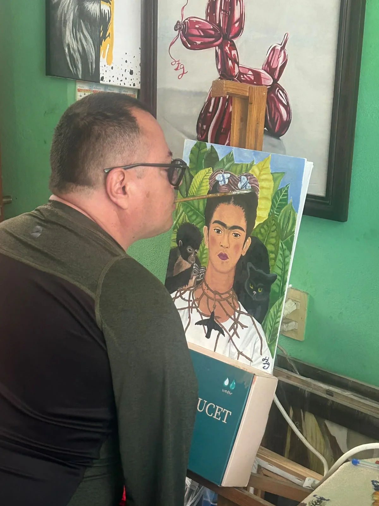

El arte de trascender
Nací el 25 de diciembre de 1975, en la Ciudad de México. Mi nombre es Jesús García Zapata, sufrí un accidente a los 15 años. Toqué unos cables de alta tensión con un tubo galvanizado, por lo consiguiente, recibí una descarga eléctrica la cual entró por mis brazos, calcinó los huesos de mis manos y salió por mi pie derecho, calcinando el dedo gordo del pie.
Hoy te puedo decir que tengo todo lo necesario para sentirme feliz y realizado en cada uno de mis roles de vida, que no necesito mis brazos para lograr lo que me propongo. Pinto con la boca y con el pie, no como un acto de desafío, sino como la expresión natural de mi esencia.
Asociación de Pintores con la Boca y con el Pie
Soy miembro activo de la AMFPA / VDMFK, una organización mundial que promueve la independencia y profesionalización de artistas como yo. Su filosofía me ha permitido llevar mi arte a rincones del mundo que nunca imaginé.
Visitar web de la AMFPAHitos Clave
"Cada trazo, cada palabra, nace del mismo lugar: el deseo de compartir lo que somos."